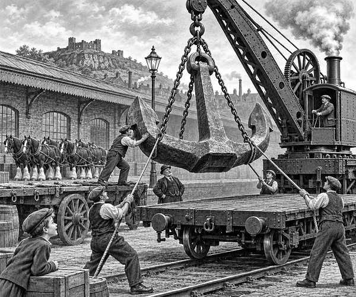

It was 1 May 1911.
A giant waited at an ironworks in Netherton.
It had no feet.
It had no face.
It was Titanic’s huge centre anchor.
Its steel head had been cast in Newcastle.
Its long shank had been forged in Halesowen.
Workers at Noah Hingley and Sons made more parts and joined them all together.
The finished anchor was 18 feet 6 inches long.
That is longer than a family car.
It weighed about 16 tons.
That is about as heavy as eleven small cars!
Titanic fact: This was the largest anchor in the world at the time. It was made for the centre of Titanic’s bow.
First, the anchor and its chain were tested.
The makers had to be sure they were strong.
Then came a new problem.
How could the giant reach the railway?
Workers fixed it to a heavy wooden dray.
A dray is a strong, low wagon.
Eight shire horses were put in harness.
More horses joined them for the steep roads.
Soon, up to twenty horses were ready.
Some wore bright May Day ribbons.
People filled the streets to watch.
The driver gave the signal.
The horses leaned into their harness.
Clop. Clop. Creak.
The great wagon began to move.
It rolled through Netherton and on towards Dudley.
The team climbed each hill slowly.
Workers walked beside the wagon and watched every wheel.
At the goods yard, a crane lifted the anchor onto a railway wagon.
Its road journey was over.
But its adventure was not.
The anchor travelled by train to Fleetwood.
Then a ship carried it across the sea to Belfast.
There, more horses hauled it to the shipyard.
At last, the giant anchor met the giant ship.
It was fitted into Titanic’s bow.
One mighty anchor had needed ironworkers, carters, horses, railway workers and sailors.
Its journey was a giant feat of teamwork.